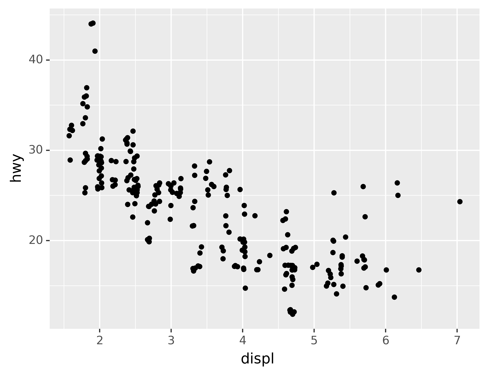
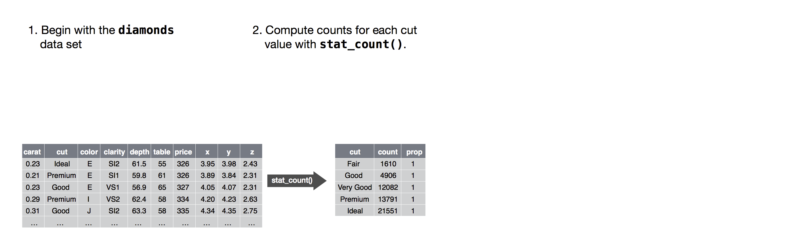

Ch. 4 Transformations
Last update: Fri Nov 6 11:33:28 2020 -0600 (420d787)
4.1 Statistical transformations
Next, let’s take a look at a bar chart. Bar charts seem simple, but they are interesting because they reveal something subtle about plots. Consider a basic bar chart, as drawn with geom_bar(). The following chart displays the total number of diamonds in the diamonds dataset, grouped by cut. The diamonds dataset comes in plotnine and contains information about ~54,000 diamonds, including the price, carat, color, clarity, and cut of each diamond. The chart shows that more diamonds are available with high quality cuts than with low quality cuts.
ggplot(data=diamonds) +\
geom_bar(mapping=aes(x="cut"))On the x-axis, the chart displays cut, a variable from diamonds. On the y-axis, it displays count, but count is not a variable in diamonds! Where does count come from? Many graphs, like scatterplots, plot the raw values of your dataset. Other graphs, like bar charts, calculate new values to plot:
- bar charts, histograms, and frequency polygons bin your data and then plot bin counts, the number of points that fall in each bin.
- smoothers fit a model to your data and then plot predictions from the model.
- boxplots compute a robust summary of the distribution and then display a specially formatted box.
The algorithm used to calculate new values for a graph is called a stat, short for statistical transformation. The figure below describes how this process works with geom_bar().

You can learn which stat a geom uses by inspecting the default value for the stat argument. For example, ?geom_bar shows that the default value for stat is “count,” which means that geom_bar() uses stat_count(). stat_count() is documented on the same page as geom_bar(), and if you scroll down you can find a section called “Computed variables.” That describes how it computes two new variables: count and prop.
You can generally use geoms and stats interchangeably. For example, you can recreate the previous plot using stat_count() instead of geom_bar():
ggplot(data=diamonds) +\
stat_count(mapping=aes(x="cut"))
This works because every geom has a default stat; and every stat has a default geom. This means that you can typically use geoms without worrying about the underlying statistical transformation. There are three reasons you might need to use a stat explicitly:
You might want to override the default stat. In the code below, I change the stat of
geom_bar()from count (the default) to identity. This lets me map the height of the bars to the raw values of a “y” variable. Unfortunately when people talk about bar charts casually, they might be referring to this type of bar chart, where the height of the bar is already present in the data, or the previous bar chart where the height of the bar is generated by counting rows.demo = pd.DataFrame({"cut": ["Fair", "Good", "Very Good", "Premium", "Ideal"], "freq": [1610, 4906, 12082, 13791, 21551]}) ggplot(data=demo) +\ geom_bar(mapping=aes(x="cut", y="freq"), stat="identity")
You might want to override the default mapping from transformed variables to aesthetics. For example, you might want to display a bar chart of proportion, rather than count:
ggplot(data=diamonds) +\ geom_bar(mapping=aes(x="cut", y="..prop..", group=1))To find the variables computed by the stat, look for the help section titled “computed variables.”
You might want to draw greater attention to the statistical transformation in your code. For example, you might use
stat_summary(), which summarises the y values for each unique x value, to draw attention to the summary that you’re computing:ggplot(data=diamonds) +\ stat_summary( mapping=aes(x="cut", y="depth"), fun_ymin=np.min, fun_ymax=np.max, fun_y=np.median )
You might want to override the default stat. In the code below, I change the stat of
geom_bar()from count (the default) to identity. This lets me map the height of the bars to the raw values of a “y” variable. Unfortunately when people talk about bar charts casually, they might be referring to this type of bar chart, where the height of the bar is already present in the data, or the previous bar chart where the height of the bar is generated by counting rows.
demo = pd.DataFrame({"cut": ["Fair", "Good", "Very Good", "Premium", "Ideal"],
"freq": [1610, 4906, 12082, 13791, 21551]})
ggplot(data=demo) +\
geom_bar(mapping=aes(x="cut", y="freq"), stat="identity")- You might want to override the default mapping from transformed variables to aesthetics. For example, you might want to display a bar chart of proportion, rather than count:
ggplot(data=diamonds) +\
geom_bar(mapping=aes(x="cut", y="..prop..", group=1))
To find the variables computed by the stat, look for the help section titled “computed variables.”
- You might want to draw greater attention to the statistical transformation
in your code. For example, you might use
stat_summary(), which summarises the y values for each unique x value, to draw attention to the summary that you’re computing:
ggplot(data=diamonds) +\
stat_summary(
mapping=aes(x="cut", y="depth"),
fun_ymin=np.min,
fun_ymax=np.max,
fun_y=np.median
)plotnine provides over 20 stats for you to use. Each stat is a function, so you can get help in the usual way, e.g. ?stat_bin. To see a complete list of stats, try the ggplot2 cheatsheet.
4.1.1 Exercises
What is the default geom associated with
stat_summary()? How could you rewrite the previous plot to use that geom function instead of the stat function?What does
geom_col()do? How is it different togeom_bar()?Most geoms and stats come in pairs that are almost always used in concert. Read through the documentation and make a list of all the pairs. What do they have in common?
What variables does
stat_smooth()compute? What parameters control its behaviour?In our proportion bar chart, we need to set
group=1. Why? In other words what is the problem with these two graphs?ggplot(data=diamonds) +\ geom_bar(mapping=aes(x="cut", y="..prop..")) ggplot(data=diamonds) +\ geom_bar(mapping=aes(x="cut", fill="color", y="..prop.."))What is the default geom associated with
stat_summary()? How could you rewrite the previous plot to use that geom function instead of the stat function?What does
geom_col()do? How is it different togeom_bar()?Most geoms and stats come in pairs that are almost always used in concert. Read through the documentation and make a list of all the pairs. What do they have in common?
What variables does
stat_smooth()compute? What parameters control its behaviour?In our proportion bar chart, we need to set
group=1. Why? In other words what is the problem with these two graphs?ggplot(data=diamonds) +\ geom_bar(mapping=aes(x="cut", y="..prop..")) ggplot(data=diamonds) +\ geom_bar(mapping=aes(x="cut", fill="color", y="..prop.."))
4.2 Position adjustments
There’s one more piece of magic associated with bar charts. You can colour a bar chart using either the colour aesthetic, or, more usefully, fill:
ggplot(data=diamonds) +\
geom_bar(mapping=aes(x="cut", colour="cut"))ggplot(data=diamonds) +\
geom_bar(mapping=aes(x="cut", fill="cut"))Note what happens if you map the fill aesthetic to another variable, like clarity: the bars are automatically stacked. Each colored rectangle represents a combination of cut and clarity.
ggplot(data=diamonds) +\
geom_bar(mapping=aes(x="cut", fill="clarity"))The stacking is performed automatically by the position adjustment specified by the position argument. If you don’t want a stacked bar chart, you can use one of three other options: "identity", "dodge" or "fill".
position="identity"will place each object exactly where it falls in the context of the graph. This is not very useful for bars, because it overlaps them. To see that overlapping we either need to make the bars slightly transparent by settingalphato a small value, or completely transparent by settingfill=None.
ggplot(data=diamonds, mapping=aes(x="cut", fill="clarity")) +\
geom_bar(alpha=1/5, position="identity")ggplot(data=diamonds, mapping=aes(x="cut", colour="clarity")) +\
geom_bar(fill=None, position="identity")The identity
positionadjustment is more useful for 2d geoms, like points, where it is the default.position="fill"works like stacking, but makes each set of stacked bars the same height. This makes it easier to compare proportions across groups.ggplot(data=diamonds) +\ geom_bar(mapping=aes(x="cut", fill="clarity"), position="fill")position="dodge"places overlapping objects directly beside one another. This makes it easier to compare individual values.ggplot(data=diamonds) +\ geom_bar(mapping=aes(x="cut", fill="clarity"), position="dodge")
There’s one other type of adjustment that’s not useful for bar charts, but it can be very useful for scatterplots. Recall our first scatterplot. Did you notice that the plot displays only 126 points, even though there are 234 observations in the dataset?

The values of hwy and displ are rounded so the points appear on a grid and many points overlap each other. This problem is known as overplotting. This arrangement makes it hard to see where the mass of the data is. Are the data points spread equally throughout the graph, or is there one special combination of hwy and displ that contains 109 values?
You can avoid this gridding by setting the position adjustment to “jitter.” position="jitter" adds a small amount of random noise to each point. This spreads the points out because no two points are likely to receive the same amount of random noise.
ggplot(data=mpg) +\
geom_point(mapping=aes(x="displ", y="hwy"), position="jitter")
Adding randomness seems like a strange way to improve your plot, but while it makes your graph less accurate at small scales, it makes your graph more revealing at large scales. Because this is such a useful operation, plotnine comes with a shorthand for geom_point(position="jitter"): geom_jitter().
To learn more about a position adjustment, look up the help page associated with each adjustment: ?position_dodge, ?position_fill, ?position_identity, ?position_jitter, and ?position_stack.
4.2.1 Exercises
What is the problem with this plot? How could you improve it?
ggplot(data=mpg, mapping=aes(x="cty", y="hwy")) +\ geom_point()What parameters to
geom_jitter()control the amount of jittering?Compare and contrast
geom_jitter()withgeom_count().What’s the default position adjustment for
geom_boxplot()? Create a visualisation of thempgdataset that demonstrates it.
4.3 Coordinate systems
Coordinate systems are probably the most complicated part of plotnine. The default coordinate system is the Cartesian coordinate system where the x and y positions act independently to determine the location of each point. There is one other coordinate system that is occasionally helpful.7
coord_flip()switches the x and y axes. This is useful (for example), if you want horizontal boxplots. It’s also useful for long labels: it’s hard to get them to fit without overlapping on the x-axis.
ggplot(data=mpg, mapping=aes(x="class", y="hwy")) +\
geom_boxplot()ggplot(data=mpg, mapping=aes(x="class", y="hwy")) +\
geom_boxplot() +\
coord_flip()4.3.1 Exercises
What does
labs()do? Read the documentation.What does the plot below tell you about the relationship between city and highway mpg? Why is
coord_fixed()important? What doesgeom_abline()do?
ggplot(data=mpg, mapping=aes(x="cty", y="hwy")) +\
geom_point() +\
geom_abline() +\
coord_fixed()4.4 The layered grammar of graphics
In the previous sections, you learned much more than how to make scatterplots, bar charts, and boxplots. You learned a foundation that you can use to make any type of plot with plotnine. To see this, let’s add position adjustments, stats, coordinate systems, and faceting to our code template:
ggplot(data=<DATA>) +\
<GEOM_FUNCTION>(
mapping=aes(<MAPPINGS>),
stat=<STAT>,
position=<POSITION>
) +\
<COORDINATE_FUNCTION> +\
<FACET_FUNCTION>Our new template takes seven parameters, the bracketed words that appear in the template. In practice, you rarely need to supply all seven parameters to make a graph because plotnine will provide useful defaults for everything except the data, the mappings, and the geom function.
The seven parameters in the template compose the grammar of graphics, a formal system for building plots. The grammar of graphics is based on the insight that you can uniquely describe any plot as a combination of a dataset, a geom, a set of mappings, a stat, a position adjustment, a coordinate system, and a faceting scheme.
To see how this works, consider how you could build a basic plot from scratch: you could start with a dataset and then transform it into the information that you want to display (with a stat).

Next, you could choose a geometric object to represent each observation in the transformed data. You could then use the aesthetic properties of the geoms to represent variables in the data. You would map the values of each variable to the levels of an aesthetic.

You’d then select a coordinate system to place the geoms into. You’d use the location of the objects (which is itself an aesthetic property) to display the values of the x and y variables. At that point, you would have a complete graph, but you could further adjust the positions of the geoms within the coordinate system (a position adjustment) or split the graph into subplots (faceting). You could also extend the plot by adding one or more additional layers, where each additional layer uses a dataset, a geom, a set of mappings, a stat, and a position adjustment.

You could use this method to build any plot that you imagine. In other words, you can use the code template that you’ve learned in this chapter to build hundreds of thousands of unique plots.
ggplot2 also has
coord_quickmap()for producing maps with the correct aspect ratio andcoord_polar()for using polar coordinates. plotnine doesn’t yet have these two functions.↩︎